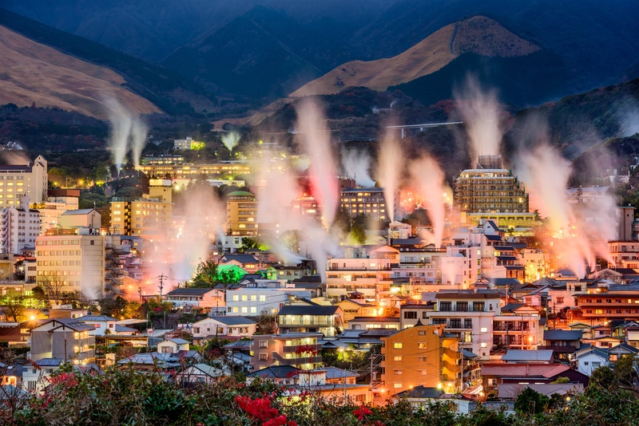
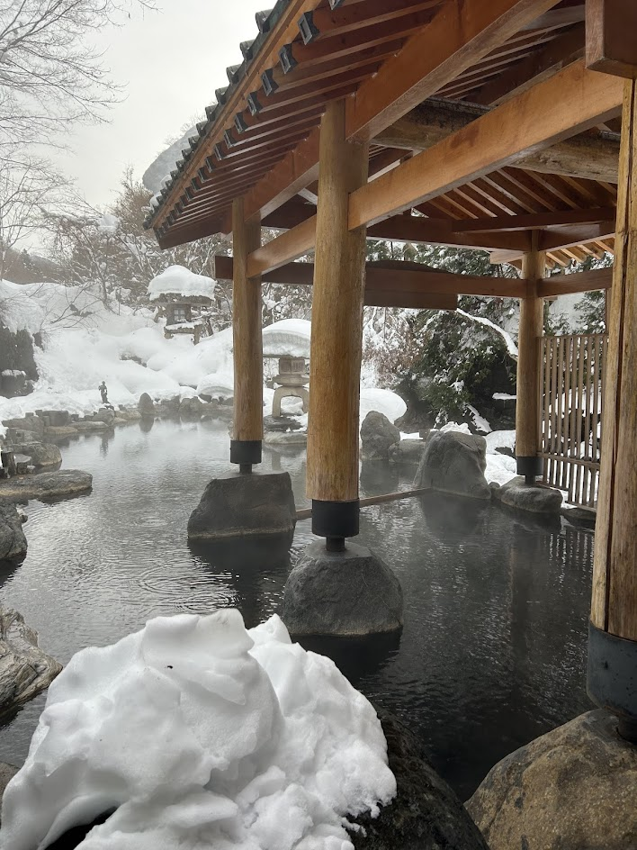
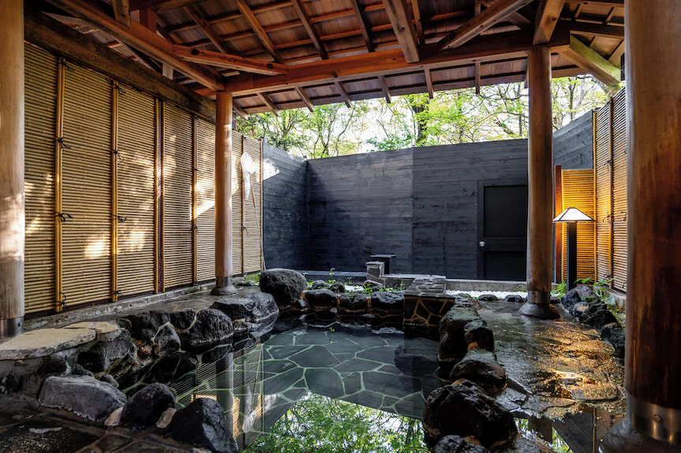
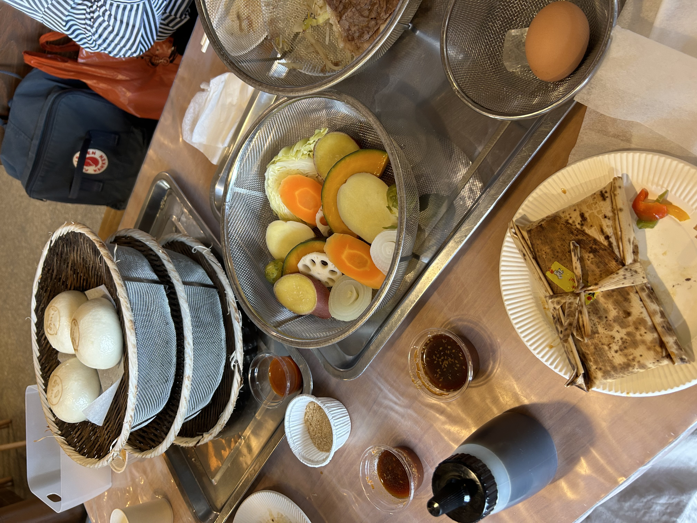
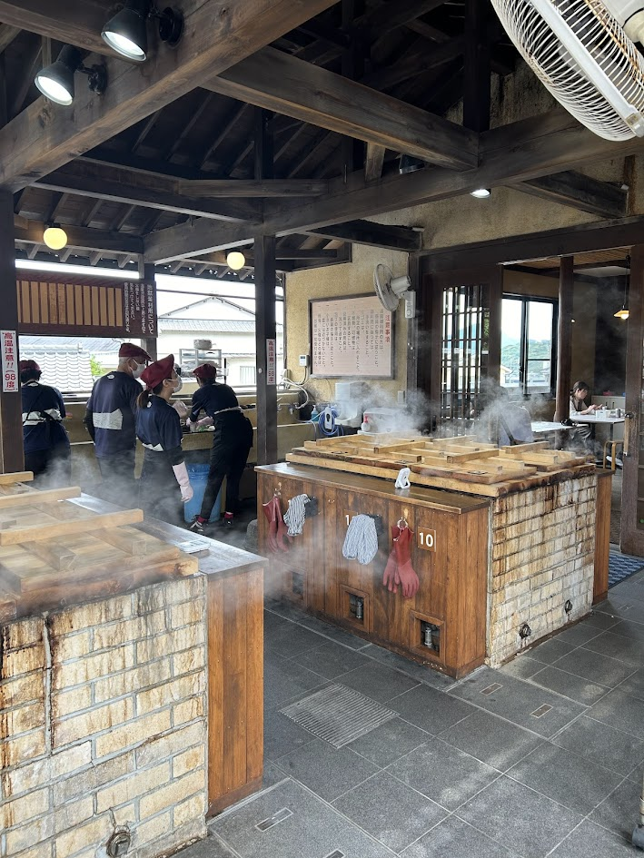
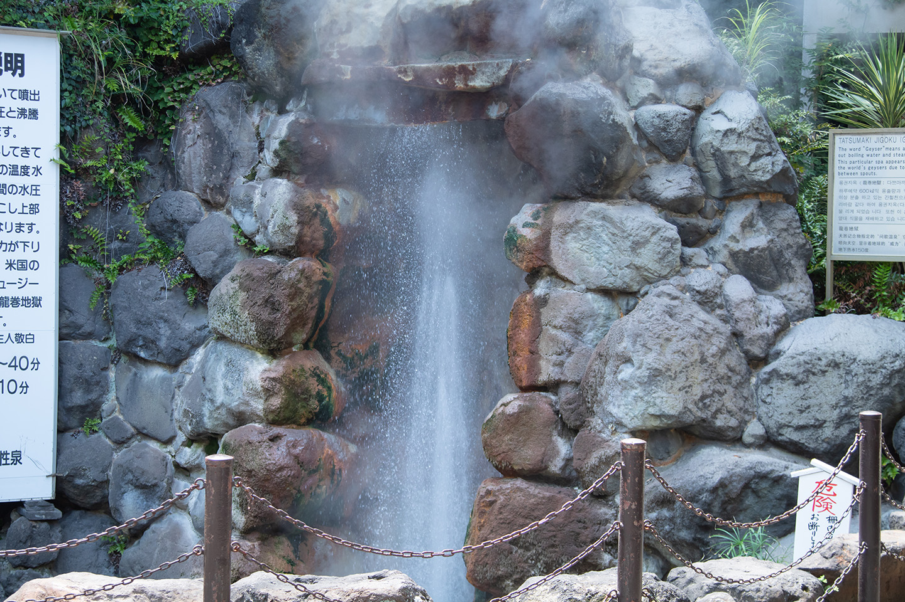

Localizada na província de Ōita, na região de Kyushu, a cidade de Beppu é um dos destinos termais mais famosos do Japão, reconhecida nacioalmente por seus onsens (fontes de águas termais). Com cerca de 2.800 fontes, Beppu oferece uma grande variedade de experiências.
Cercada por montanhas e pelo mar, a cidade combina paisagens naturais únicas com uma forte tradição cultural. Entre seus principais atrativos estão os “Jigoku” (Infernos de Beppu), fontes termais de cores vibrantes voltadas para visitação, e o Jigoku Mushi, uma técnica culinária que utiliza o vapor natural para preparar alimentos.

O Japão possui milhares de termas naturais (onsen) devido à sua localização em áreas vulcânicas. Desde a antiguidade, os banhos termais fazem parte da cultura japonesa e se popularizaram na era Edo como forma de descanso e cuidado com a saúde. Atualmente, os onsens também são importantes atrações turísticas, oferecendo experiências ligadas à natureza, tradição, hospedagem e culinária japonesa.
Existe todo um processo para se banhar em um onsen. O uso de trajes de banho e roupas é proibido.
Os rotenburo são banhos termais ao ar livre, conhecidos pelo contato com a natureza e pelas paisagens ao redor. Geralmente possuem aparência mais rústica e são projetados para proporcionar relaxamento, privacidade e sensação de liberdade.
Os uchiyu são banhos termais localizados dentro de hotéis e pousadas. Diferente dos rotenburo ao ar livre, eles ficam em áreas cobertas e oferecem mais conforto e praticidade aos hóspedes, sem a necessidade de sair do estabelecimento.


Jigoku-mushi é uma técnica tradicional de Beppu que utiliza o vapor das fontes termais para cozinhar alimentos. Popular desde o período Edo, o método permite preparar vegetais, carnes, peixes e outros pratos sem óleo, preservando os minerais naturais e deixando um leve sabor salgado nos alimentos.
O preparo utiliza 100% do vapor termal, que pode ultrapassar 70 °C, dispensando o uso de fogo ou gás. A alta temperatura preserva o sabor e a doçura natural dos ingredientes, tornando o Jigoku-mushi uma experiência culinária sustentável e característica da cultura termal de Beppu.


O Tour pelas Termas de Beppu reúne diferentes fontes termais conhecidas como “jigoku”. Ao todo, são 7 "jigokus" e cada uma possui características próprias, como cores, temperaturas e formações naturais distintas. Além das fontes, o local também conta com banhos de pés, comidas preparadas com vapor termal e áreas para visitação turística. Os principais são:
O Umi Jigoku (“Inferno do Mar”) é a maior e mais famosa fonte termal do Tour dos Infernos de Beppu. Suas águas azul-cobalto lembram o mar e atingem cerca de 98 °C
O Oniishibozu Jigoku é uma fonte termal histórica de Beppu, mencionada desde o ano 733. É conhecida pela lama quente cinzenta que borbulha e lembra a cabeça raspada de monges budistas
O Chinoike Jigoku é considerado o inferno natural mais antigo do Japão. Suas águas possuem uma coloração vermelha intensa devido à argila rica em ferro. A lama termal do local também é utilizada em pomadas medicinais para auxiliar no tratamento de doenças de pele.
O Tatsumaki Jigoku é um dos infernos de Beppu conhecido por seu gêiser natural. Em intervalos regulares, a fonte lança água quente e vapor a grandes alturas, podendo atingir cerca de 30 metros. Para controlar a força da erupção, foi construída uma estrutura de pedra sobre a fonte.


